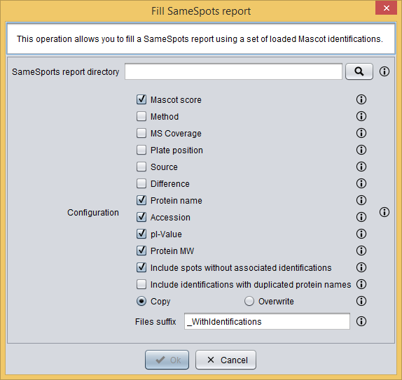
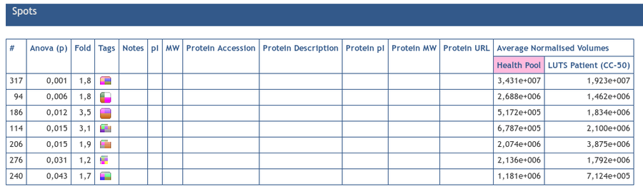
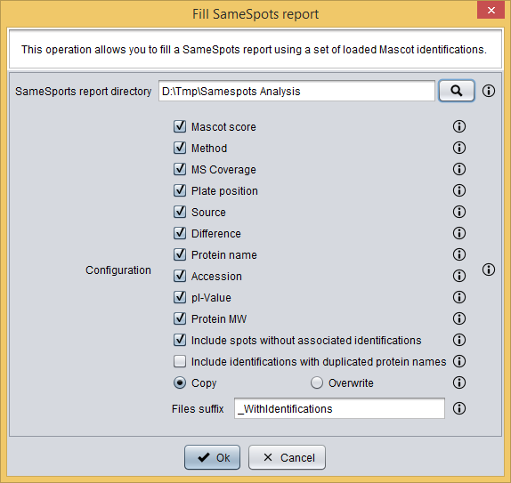
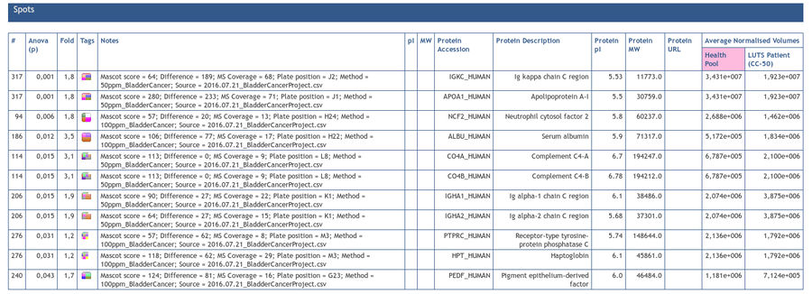

Fill SameSpots report
The Fill SameSpots report operation allows you to fill one or several SameSpots reports in HTM. Specifically, this operation will complete the spots table with the information about the protein identifications. See the end of this section for an example.
As you can see in the image below, the Fill SameSpots report dialog requires you to provide the following information:
- SameSpots report directory: the directory containing the SameSpots HTM reports.
- Configuration: different options to configure the way that the report is processed. These options are:
- Mascot score: whether Mascot score should be included in the report or not.
- Method: whether Method should be included in the report or not.
- MS Coverage: whether MS Coverage should be included in the report or not.
- Plate position: whether Plate position should be included in the report or not.
- Source: whether Source should be included in the report or not.
- Difference: whether Difference should be included in the report or not.
- Protein name: whether Protein name should be included in the report or not.
- Accession: whether Accession should be included in the report or not.
- pI-Value: whether pI-Value should be included in the report or not.
- Protein MW: whether Protein MW should be included in the report or not.
- Include spots without associated identifications: whether include spots without associated dentifications or not. If this option is selected, then spots without associated identifications will remain in the report.
- Include identifications with duplicated protein names: whether include identifications with duplicated protein names or not. If you select this option, then a row will be added for each duplicated protein name of each spot identifier.
- Mode: you can choose between:
- Copy: to make a copy of the original HTML report files. In this case, you can write in Files suffix the suffix for the new files.
- Overwrite: to overwrite the original files.

Fill SameSpots report dialog
Example
Let's imagine that you have a SameSpots HTM report that contains the following spots table:

SameSpots HTM report spots table
After loading a set of Spot Mascot identifications and using the Fill SameSpots report option, the following dialog is shown. In this example, we have selected all fields so that all the information will be in the filled report. Please, note that the selected SameSpots report directory must contain the individual HTM report files that you want to fill.

Fill SameSpots report dialog
After clicking the Ok button, the report will be filled with the specified information as you can see in the following image:

SameSpots HTM report spots table
(click in the image to enlarge)